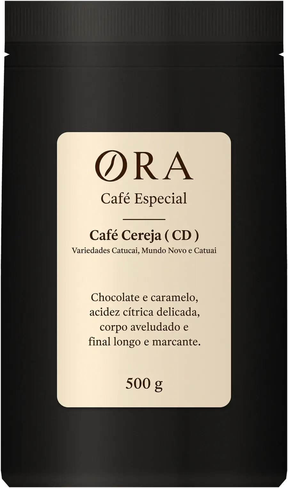
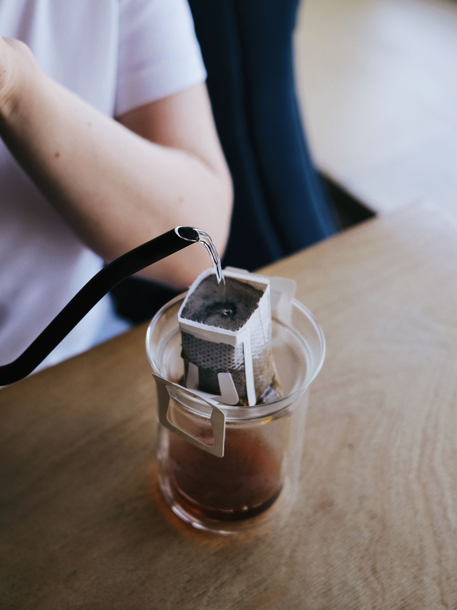
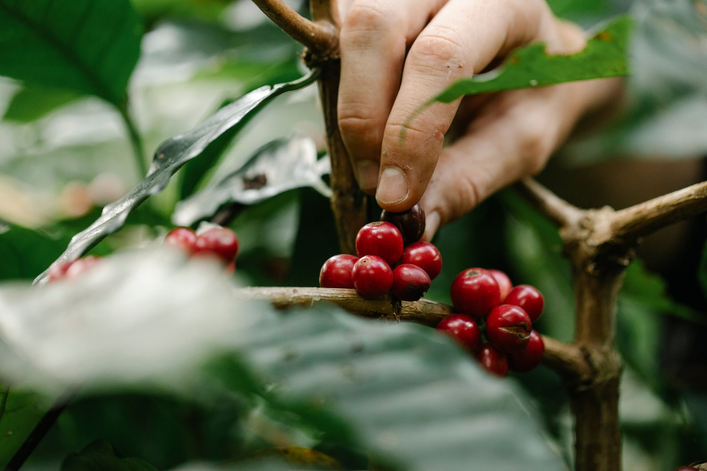
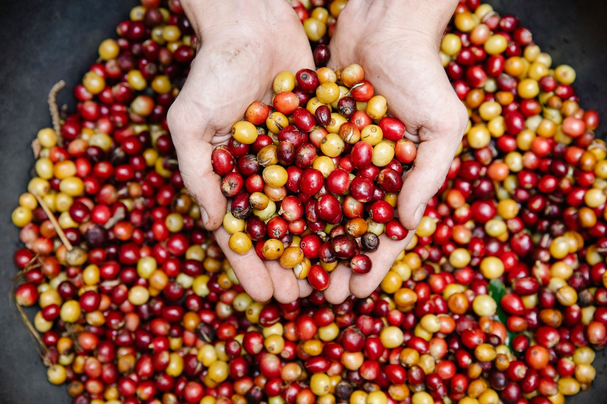
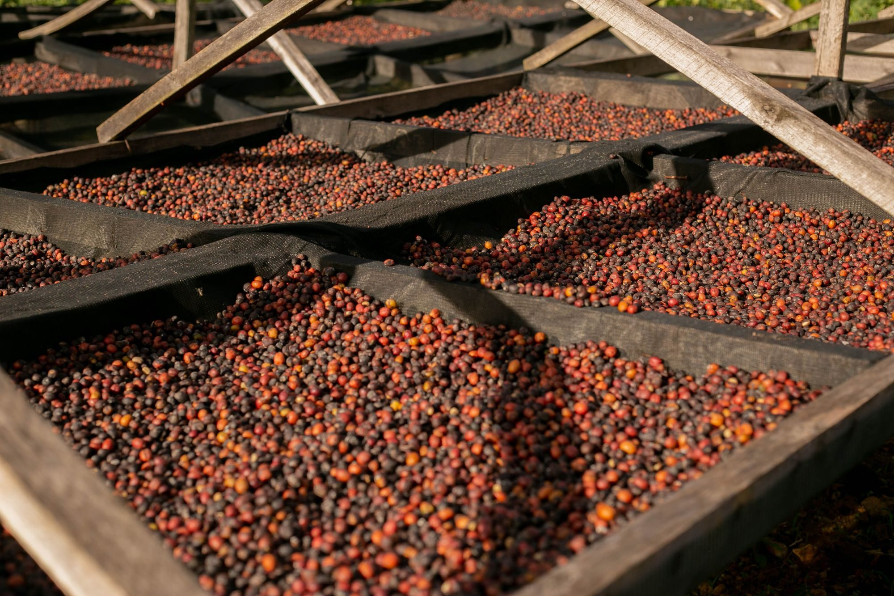
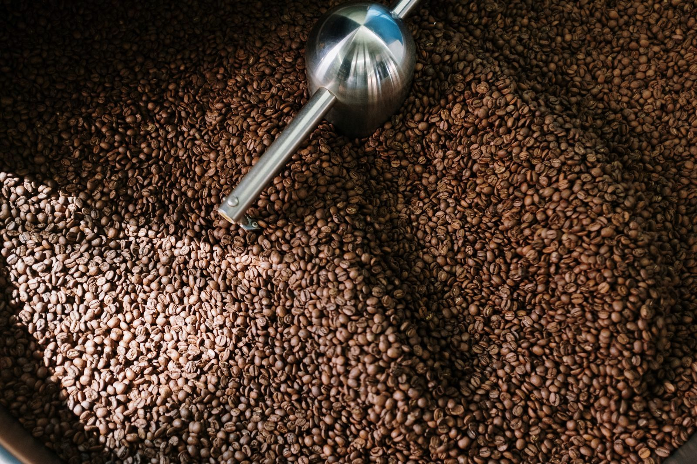

Processo natural
Natural
Um café de personalidade marcante, que valoriza a intensidade, o corpo e a expressão natural dos grãos.
500 gR$ 89,00
Conheça este café
Café especial · Minas Gerais
Cafés especiais de fazendas de Minas Gerais, colhidos maduros e torrados em pequenos lotes. Uma nova maneira de apreciar os seus momentos.
Nossos cafés
Cada café tem a sua personalidade de aroma, corpo e sabor. O que muda entre eles é o processo depois da colheita.
Processo natural
Um café de personalidade marcante, que valoriza a intensidade, o corpo e a expressão natural dos grãos.

Processo cereja descascado
Um café que valoriza a delicadeza e a complexidade dos grãos, com equilíbrio e características próprias.

03Para coar na xícara
O saquinho de filtro vazio, que se apoia na borda da xícara. Você coloca o seu café ORA e coa uma xícara por vez.
A ORA nasce em Minas Gerais. Os grãos são selecionados em fazendas do estado, colhidos maduros e torrados em pequenos lotes, para chegar à sua xícara com a qualidade da origem.
Conheça nossa históriaDo pé ao pacote
Quatro etapas, um só cuidado.

No ponto certo de maturação.
O fruto é colhido maduro, quando a casca fica vermelha ou amarela. É nesse ponto que o café tem mais doçura.

Uma curadoria de cafés.
Os cafés são escolhidos a partir de uma curadoria que valoriza a origem, a qualidade e a experiência em cada xícara.

Onde os dois cafés se separam.
O Natural seca com o fruto inteiro. O Cereja Descascado tem a casca retirada antes de secar.

Em pequenos lotes.
Os grãos são torrados em pequenos lotes e moídos para coado, prontos para a sua xícara.
Presentes
Café com caneca ou jarra térmica, na caixa ORA, com sacola kraft e um cartão com a sua mensagem. Para alguém especial, para uma data importante ou para a sua empresa.
Todo momento tem sua ORA.